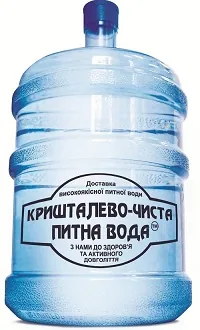

Найпрозоріша вода озера Байкал

Озеро Байкал — це територія тектонічного походження, в якій розлита чиста та прозора вода. Озеро розташоване на півдні Східного Сибіру й вважається найглибшим озером планети Земля, а також найбільшим резервуаром чистої прісної води. Озеро Байкал внесено до списку Всесвітньої спадщини організації ЮНЕСКО. Флора і фауна цієї місцевості неповторні на Землі.
Прозора вода Байкалу є однією з найчистіших у світі

Окрім того, що озеро Байкал вважається найглибшим на Землі, воно також є й найширшим на Землі. Площа поверхні води озера Байкал становить понад 31722 кв. км, і це без урахування островів. Ці дані означають, що площа Байкалу приблизно дорівнює площі таких країн, як Бельгія, Данія чи Нідерланди. Прозора вода вздовж берегової лінії простягається на 2100 км.
Чарівну місцевість озера оточують скелясті гори та виступи, на яких розкинулися великі території недоторканої рослинності.
Найпрозоріша вода у світі має такі мінеральні та фізичні властивості
Окрім своїх заслуг у масштабності об'єму та глибини, незаперечною перевагою озера є його плюси порівняно з іншими озерами: за складом це практично ідеальна вода. У ній немає надлишку мінералів, а також практично немає органічних домішок, але достатньо кисню. Саме ці властивості роблять лід озера міцним і кришталево прозорим!
Як і всі водні ресурси чистої прісної води, озеро Байкал може напоїти безліч людей і тварин, але саме його запаси вважаються колосальними — 23615,39 куб. км, це майже 19% запасу прісної води у світі. За своїми масштабами чистої та прозорої води Байкал поступається лише Каспійському морю.
Крізь цей прозорий лід видно фантастичні зображення. Подеколи можна розгледіти предмети й каміння, що перебувають на глибині до 40 метрів.
У літні періоди прозора вода дає змогу розгледіти не так глибоко. Це зумовлено рослинністю та живністю, проте на відстані 10 метрів вода все ще залишається прозорою.